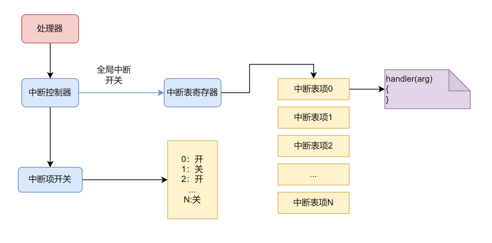

中断管理
一、描述
中断是由处理器支持的一个临时打断当前执行流的功能，可分为设备中断和处理器异常。设备中断就是当网卡设备收到数据后会产生一个中断，打断处理器当前在处理的事情，去处理网络数据包。异常中断就是当处理器执行了一个不存在的指令或者访问了一个没有权限的内存地址，处理器就会中断当前的执行流，去对异常做一个处理，一般都是 kill 当前的进程。
二、原理
中断管理的实现是基于处理器的中断管理机制的，不同的架构具体实现机制可能有差别，但是在大体逻辑上都是一致的，因此可以抽象出一套统一的接口来供上层使用。
由于中断数量会比较多，因此，都会有一个中断表来注册中断。然后由一个寄存器或者多个寄存器来记录该表的地址。产生中断的时候会去查表，根据具体的中断号去找对应的中断处理函数，简单来说就是去调用中断的回调函数。
中断是可以全局打开和关闭的，打开后才会响应中断。除此之外，对于每一个具体的中断，都可以打开和关闭，在禁止了网卡中断后，即使打开了全局中断，也收不到网络数据包了。但是，异常是不可以屏蔽的，异常是来告诉内核出现一些问题了，需要根据具体的异常做处理。有的异常是不可以修复的，会导致系统死机，有的异常时可以修复的，比如页故障，可以拿来实现页面延迟映射， COW 等机制。
三、框架图

四、接口
需要注册某个中断的时候，需要传入中断号，绑定中断处理函数，设置中断的参数数据，设置中断的名字。
NX_Error NX_IRQ_Bind(NX_IRQ_Number irqno,
NX_IRQ_Handler handler,
void *data,
char *name,
NX_U32 flags);
当需要注销某个中断的时候，只需要传入中断号以及注册时的数据即可。相当于解除了中断函数的绑定。
NX_Error NX_IRQ_Unbind(NX_IRQ_Number irqno, void *data);
注册了中断后，并不能产生中断，还需要解除中断的屏蔽（unmask），相当于打开中断。除此之外，如果不希望产生该中断，则需要屏蔽某个中断（mask），相当于关闭中断。
NX_Error NX_IRQ_Unmask(NX_IRQ_Number irqno);
NX_Error NX_IRQ_Mask(NX_IRQ_Number irqno);
前面有讲到关于全局中断的打开和关闭，全局中断的打开是 NX_IRQ_Enable 函数，相反关闭则是
NX_IRQ_Disable 。由于有的时候只是为了暂时关闭中断，处理完后需要恢复中断的状态，于是则需要使用保存中断的状态和恢复中断的状态，即 NX_IRQ_SaveLevel 和 NX_IRQ_RestoreLevel 。
#define NX_IRQ_Enable() NX_IRQ_ControllerInterface.enable()
#define NX_IRQ_Disable() NX_IRQ_ControllerInterface.disable()
#define NX_IRQ_SaveLevel() NX_IRQ_ControllerInterface.saveLevel()
#define NX_IRQ_RestoreLevel(level) NX_IRQ_ControllerInterface.restoreLevel(level)